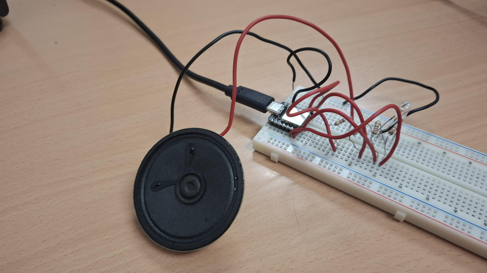
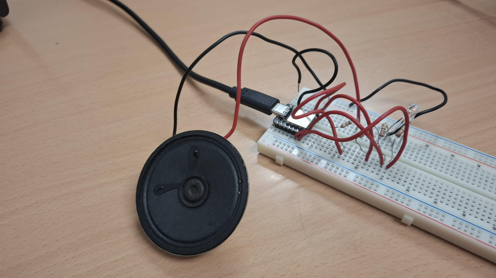

Projecte:
Introducció
En aquest projecte, hem creat un sistema interactiu utilitzant una placa Arduino nRF52832 que combina so i llum per a una experiència divertida. L'objectiu principal era fer sonar la icònica cançó de Star Wars a través d'un altaveu, mentre que un LED RGB canviava de color en funció de la nota que s'estava reproduint.
Objectius
Els objectius que teníem eren crear un circuit funcional amb Arduino, amb un codi creat per nosaltres mateixos i funcional. Aquest codi havia de contenir funcions de per fer sonar música i per encendre leds.
El nostre objectiu, des d'un principi, era fer que amb un botó poguessis encendre o apagar un altaveu, el qual mentre estigui encès sonaria la cançó principal de Star Wars, i a més un LED RGB connectat perquè vagi canviant de color mentre la música soni.
Explicació del projecte
El Arduino nRF52832 és una placa potent i versàtil, ideal per a aquest tipus de projectes per les seves capacitats de processament i comunicació Bluetooth. Connectem l'altaveu directament a un dels pins digitals de l'Arduino i li vam donar els valors de cada nota que volíem que sonés.
Per al LED RGB, connectem cadascun dels seus tres colors (vermell, verd i blau) a pins PWM (Pulse Width Modulation) de l'Arduino. Això ens va permetre controlar la intensitat de cada color individualment, aconseguint així una àmplia gamma de tonalitats. La lògica darrere de la llum era simple però efectiva: assignem un color específic o una combinació de colors a cada nota musical. D'aquesta manera, en sonar una nota de la cançó, el LED RGB s'il·luminava amb el color corresponent, creant una experiència visual dinàmica i atractiva.
La programació es va realitzar a l'entorn de desenvolupament d'Arduino. Definim les freqüències de les notes de Star Wars i les emmagatzemem en arrays. Després vam crear una funció que, per a cada nota, enviava la freqüència a l'altaveu i, simultàniament, ajustava els valors PWM dels pins del LED RGB per mostrar el color desitjat. La sincronització entre la música i la llum va ser clau per a lèxit del projecte.
 

Problemes:
Com sol passar en el desenvolupament de projectes, ens trobem amb un petit problema. En intentar carregar el codi a la placa Arduino, el nostre ordinador no detectava el port USB correctament. Això ens va impedir establir comunicació amb la placa i, per tant, carregar el nostre programa. Afortunadament, vam poder solucionar-ho ràpidament utilitzant l'ordinador d'un company. Gràcies al vostre ordinador, aconseguim carregar el codi sense problemes i veure el nostre projecte cobrar vida.